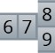
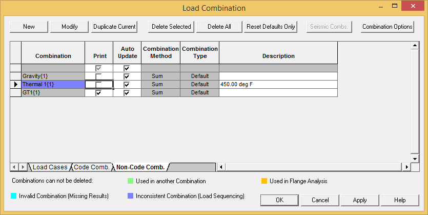
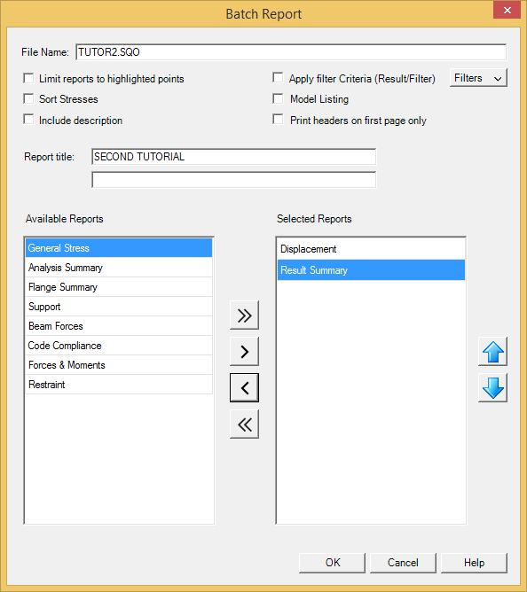

Selecting Combinations
AutoPIPE provides an option to select which load cases and combinations will be included in an output report. The default is to include all load cases and combinations. You will now disable all load cases (not print) but the GR+T1 load combination in order to further minimize the output report. In effect, you will be generating a report that contains only those points that met the filter criteria specified for combination GR+T1.
 1. Select Result > Setup > Combinations and select the Non-Code Comb. tab.
- The Load Combinations dialog displays as shown below. By default AutoPIPE enables all
combinations. You will now disable the GR load case (Print column) in order to isolate results only for the GT1 (i.e. GR+T1) load combination. Disable the following fields by clicking in the box adjacent to the field (ensure there is NOT a checkmark in the box next to the Gravity or Thermal fields):

- Press OK to close the dialog.
- The next step is to generate the output report. Select Result > Quick Reports > Output Report.
- The Batch Report dialog is displayed as shown in the following figure. Accept the default report file name, then make the following changes to the dialog; these changes allow you to produce a report which includes only those points which satisfy the displacement criteria defined previously:

- When the dialog appears as shown above, press OK to accept the values and close it. The output report is displayed in a separate window.
| Hint: |
Like any window, the output report can be re-sized, minimized, maximized, scrolled, printed, etc. Refer to your Windows’ documentation for more information on windows and their properties. |
- Note that only the points which met the user-specified filter criteria (exceed 0.8"
{20mm}deflection) for combination GT1 are reported. You will now close this window and return to our model. Select File > Exit to close the report window (you can also click the “X” in the upper-right corner of the window).